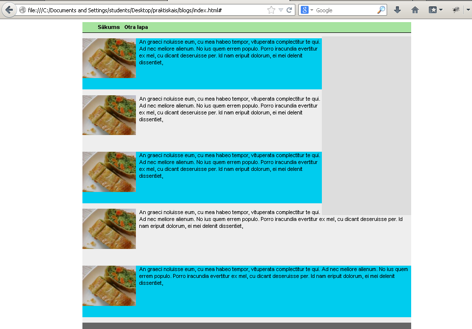

Atpakaļ
Mērķis: Apgūt CSS lietojumu, lai izstrādātu vietnes vizuālo noformējumu
Uzdevums: Izmantojot CSS noformēt iepriekšējā praktiskajā darbā izveidoto HTML (vai arī jaunizveidotu), radot vienotu stilu visām lapām.
- Izvēlieties glītu krāsu kombināciju jūsu lapai.
- Idejas varat smelties no colorhunt.co paletēm, Canva vai Visme blogos utt.
- Uzveidojiet izkārtojumu un galveni:
- Jāizveido ārēja CSS datne, kas tiek iekļauta html dokumentā ar
link taga palīdzību.
- Jāizveido
960px plata un vismaz 500px augsta divu kolonnu (saturs + reklāmas vai cits papildus saturs) lapa, kura ir centrēta loga vidū izmantojot margin: 0 auto; stilu.
- Jāizveido horizontālā izvēlne lapas augšpusē, izmantojot
ul, li tagus un list-style īpašību. Uzbīdot ar peli uz izvēlnes tās fona un teksta krāsai jāmainās uz pretējo. Jāizmanto padding un margin, izvēlnes elementu stilizēšanai.
- Zem izvēlnes jānovelk horizontāla svītra visu
960px platumā izmantojot border īpašību.
- Noformējiet saturu:
- Jāizmanto
class vai id selektori, lai noteiktu kuriem html elementiem piešķirt jaunu izskatu.
- Jāizmanto teksta stila īpašības, piemēram,
font-family stilu.
- Visām saitēm jāpaslēpj apakšsvītra un jābūt tumši pelēkām.
- Jāizveido rindkopa ar tekstu kurā ievietots attēls. Tekstam jāplūst ap attēlu izmantojot
float īpašību.
- Jāizmanto katra otrā elementa fona iekrāsošana citā krāsā, piemēram. bloga ierakstiem, izmantojot
nth-child(odd) pseidoklasi.
- Izveidojiet drukas stilu:
- Vietnei jābūt dažādām stila lapām priekš izvades uz druku un ekrānu. Piemēram, lai netērētu printera tinti drukas stila lapai var nenorādīt nekādus fona atribūtus vai arī atsevišķus elementus, kā navigāciju, paslēpt izmantojot atribūtus
display: none; vai visibility: hidden;.
Darbu sagatavojiet jaunā folderī ar nosaukumu "Vārds Uzvārds Prakt2" (aiztājiet ar savu vārdu un uzvārdu).
Praktiskā darba folderi arhivējiet zip formātā.
Nosūtiet arhīvu uz e-pastu mikelis@va.lv.
Piemērs:
